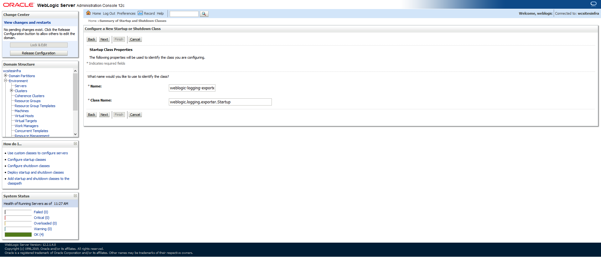
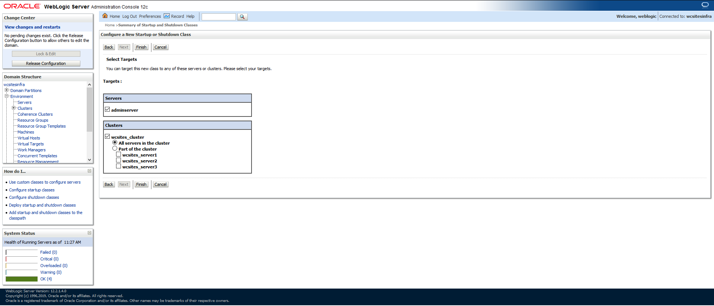
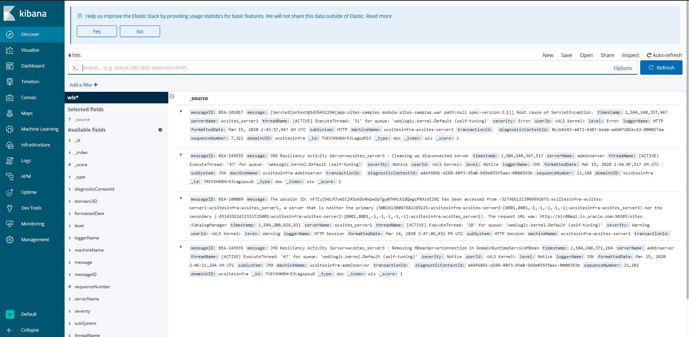

The WebLogic Logging Exporter adds a log event handler to WebLogic Server. WebLogic Server logs can be pushed to Elasticsearch in Kubernetes directly by using the Elasticsearch REST API. For more details, see to the WebLogic Logging Exporter project.
This sample shows you how to publish WebLogic Server logs to Elasticsearch and view them in Kibana. For publishing operator logs, see this sample.
This document assumes that you have already set up Elasticsearch and Kibana for logs collection. If you have not, please see this document.
The pre-built binaries are available on the WebLogic Logging Exporter Releases page.
Download:
These identifiers are used in the sample commands in this document.
wcsites-ns: WebCenter Sites domain namespacewcsitesinfra: domainUIDwcsitesinfra-adminserver: Administration Server pod nameCopy the weblogic-logging-exporter-1.0.0.jar and snakeyaml-1.25.jar files to the domain home directory in the Administration Server pod.
$ kubectl cp <file-to-copy> <namespace>/<Administration-Server-pod>:<domainhome>
$ kubectl cp snakeyaml-1.25.jar wcsites-ns/wcsitesinfra-adminserver:/u01/oracle/user_projects/domains/wcsitesinfra/
$ kubectl cp weblogic-logging-exporter-1.0.0.jar wcsites-ns/wcsitesinfra-adminserver:/u01/oracle/user_projects/domains/wcsitesinfra/
In the WebLogic Server Administration Console, in the left navigation pane, expand Environment, and then select Startup and Shutdown Classes.
Add a new startup class. You may choose any descriptive name, however, the class name must be weblogic.logging.exporter.Startup.

Target the startup class to each server from which you want to export logs.

In your /u01/oracle/user_projects/domains/wcsitesinfra/config/config.xml file, this update should look similar to the following example:
$ kubectl exec -it wcsitesinfra-adminserver -n wcsites-ns cat /u01/oracle/user_projects/domains/wcsitesinfra/config/config.xml
<startup-class>
<name>weblogic-logging-exporter</name>
<target>AdminServer,wcsites_cluster</target>
<class-name>weblogic.logging.exporter.Startup</class-name>
</startup-class>
CLASSPATHCopy the setDomainEnv.sh file from the pod to a local folder:
$ kubectl cp wcsites-ns/wcsitesinfra-adminserver:/u01/oracle/user_projects/domains/wcsitesinfra/bin/setDomainEnv.sh $PWD/setDomainEnv.sh
tar: Removing leading `/' from member names
Ignore exception: tar: Removing leading '/' from member names
Update the server class path in setDomainEnv.sh:
CLASSPATH=/u01/oracle/user_projects/domains/wcsitesinfra/weblogic-logging-exporter-1.0.0.jar:/u01/oracle/user_projects/domains/wcsitesinfra/snakeyaml-1.25.jar:${CLASSPATH}
export CLASSPATH
Copy back the modified setDomainEnv.sh file to the pod:
$ kubectl cp setDomainEnv.sh wcsites-ns/wcsitesinfra-adminserver:/u01/oracle/user_projects/domains/wcsitesinfra/bin/setDomainEnv.sh
``
Specify the Elasticsearch server host and port number in file kubernetes/samples/scripts/create-wcsites-domain/utils/weblogic-logging-exporter/WebLogicLoggingExporter.yaml:
Example:
weblogicLoggingIndexName: wls
publishHost: elasticsearch.default.svc.cluster.local
publishPort: 9200
domainUID: wcsitesinfra
weblogicLoggingExporterEnabled: true
weblogicLoggingExporterSeverity: TRACE
weblogicLoggingExporterBulkSize: 1
Copy the WebLogicLoggingExporter.yaml file to the domain home directory in the WebLogic Administration Server pod:
$ kubectl cp kubernetes/samples/scripts/create-wcsites-domain/utils/weblogic-logging-exporter/WebLogicLoggingExporter.yaml wcsites-ns/wcsitesinfra-adminserver:/u01/oracle/user_projects/domains/wcsitesinfra/config/
By default paths for wls-exporter are commented in ingress template. In order to expose the wls-exporter end-point externally, wcsites ingress must be edited and needs to be re-applied (if necessary). (See Using Voyager Loadbalacer)
To restart the servers, stop and then start them using the following commands:
To stop the servers:
$ kubectl patch domain wcsitesinfra -n wcsites-ns --type='json' -p='[{"op": "replace", "path": "/spec/serverStartPolicy", "value": "NEVER" }]'
To start the servers:
$ kubectl patch domain wcsitesinfra -n wcsites-ns --type='json' -p='[{"op": "replace", "path": "/spec/serverStartPolicy", "value": "IF_NEEDED" }]'
After all the servers are restarted, see their server logs to check that the weblogic-logging-exporter class is called, as shown below:
======================= WebLogic Logging Exporter Startup class called
Reading configuration from file name: /u01/oracle/user_projects/domains/wcsitesinfra/config/WebLogicLoggingExporter.yaml
Config{weblogicLoggingIndexName='wls', publishHost='domain.host.com', publishPort=9200, weblogicLoggingExporterSeverity='Notice', weblogicLoggingExporterBulkSize='2', enabled=true, weblogicLoggingExporterFilters=FilterConfig{expression='NOT(MSGID = 'BEA-000449')', servers=[]}], domainUID='wcsitesinfra'}
Create an index pattern wls* in Kibana > Management. After the servers are started, you will see the log data in the Kibana dashboard:
